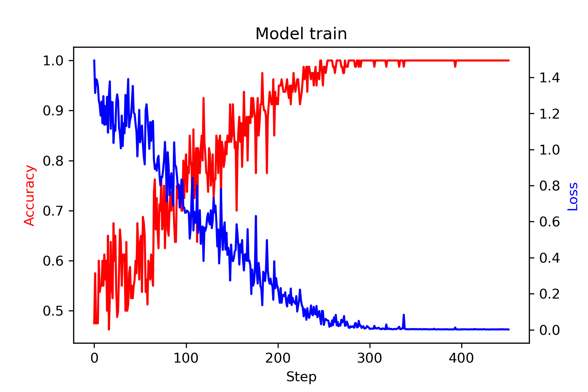
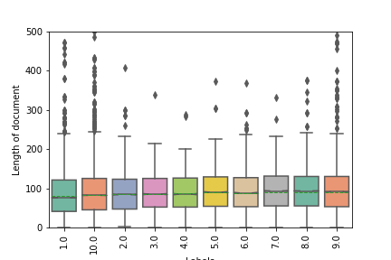

Simple Documentation Tutorial : Mantéïa¶
Designing your neural network to natural language processing. Deep learning has been used extensively in natural language processing (NLP) because it is well suited for learning the complex underlying structure of a sentence and semantic proximity of various words. Data cleaning , construction model (Bert, Roberta, Distilbert, XLNet, Albert, GPT, GPT2), quality measurement training and finally visualization of your results on several dataset ( 20newsgroups, Agnews Amazon Review Full, Amazon Review Polarity, DBPedia, PubMed_20k_RCT, Short_Jokes, Sogou News, SST-2, SST-5, Tweeter Airline Sentiment, Yahoo! Answers, Yelp Review Full, Yelp Review Polarity).
|  |  |